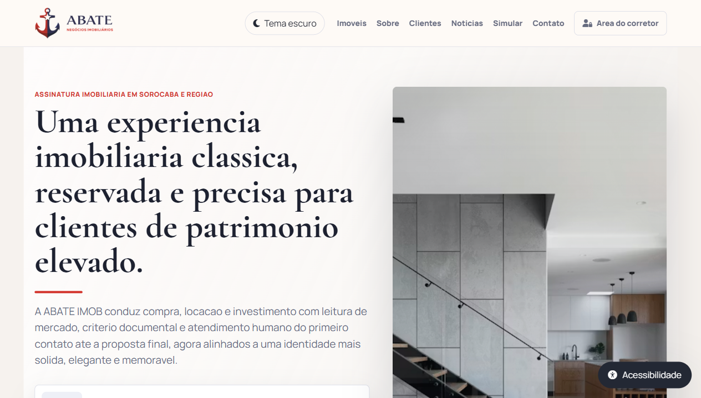
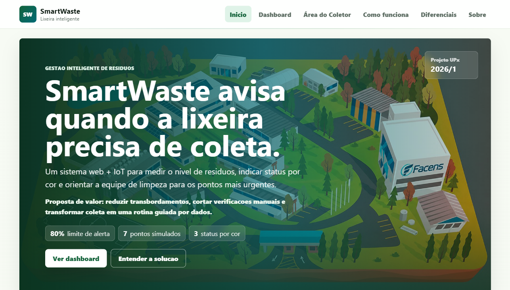
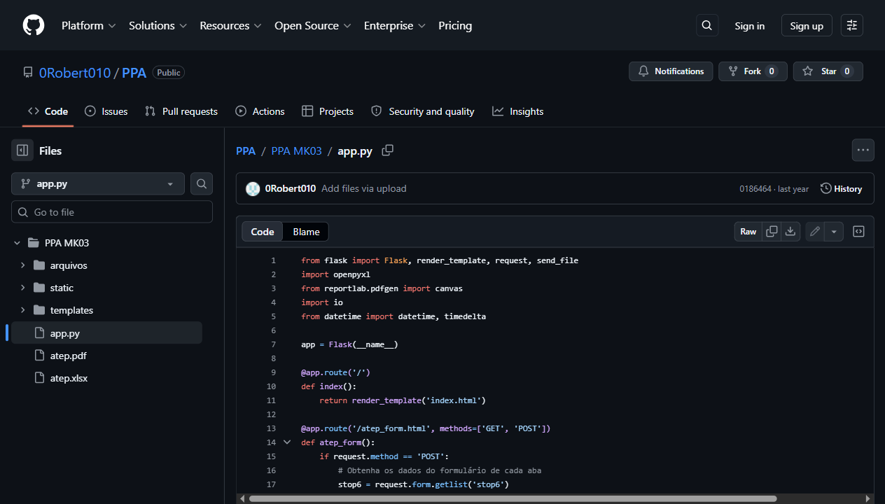
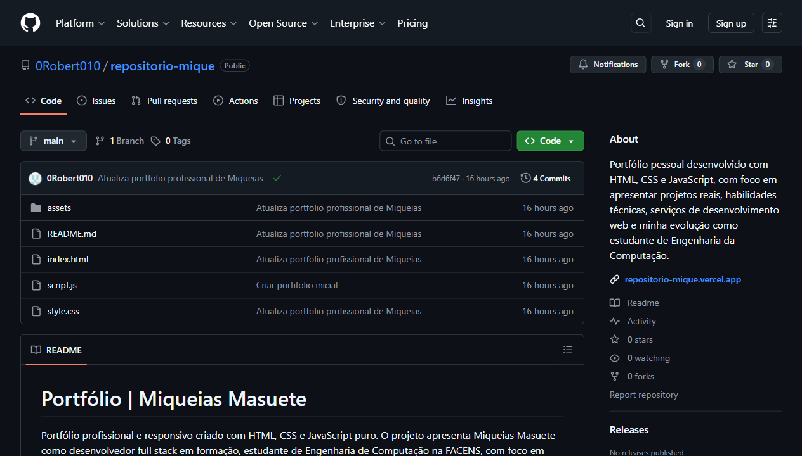

Aberto a freelance e estágio
Desenvolvedor Web em formação | Engenharia de Computação
Crio sites modernos para negócios e projetos profissionais.
Transformo ideias em páginas funcionais, bonitas e publicáveis, incluindo portfólios, projetos acadêmicos, catálogos e sites para pequenos negócios.
Sobre mim
Estudo tecnologia com foco em aplicação real.
Meu objetivo profissional é evoluir como desenvolvedor web/full stack, atuar em estágio, freelas e projetos para pequenos negócios, sempre com entrega publicada, organizada e fácil de entender.
Atualmente
- Curso Engenharia de Computação na FACENS.
- Foco em front-end, lógica, banco de dados e fundamentos de back-end.
- Crio sites responsivos em HTML, CSS e JavaScript com deploy na Vercel.
- Uso GitHub para versionar, documentar e apresentar evolução técnica.
Experiência prática
Minha rotina com loja, atendimento, organização de produtos e impressão 3D me dá visão de cliente. Isso ajuda a criar páginas que não ficam só bonitas: elas precisam explicar, vender, orientar e facilitar contato.
Base em tecnologia, lógica e organização de estudos.
Primeiros projetos web, Flask e automações simples com arquivos.
Portfólio profissional, SmartWaste, sites publicados e freelas.
Projetos recentes
A parte mais importante do portfólio.
Projetos separados por tipo, com status, período, objetivo, tecnologias, links reais e páginas individuais de detalhe.

ABATE IMOB
Site imobiliário premium para apresentar imóveis, fortalecer presença digital e facilitar contato com clientes por uma comunicação mais elegante e confiável.
- Período
- 2026
- Resultado
- Site online com identidade, seções comerciais e navegação responsiva.

SmartWaste
Sistema web acadêmico para monitorar lixeiras no campus da FACENS, priorizar coletas e apresentar dados em dashboard responsivo.
- Período
- 2026/1
- Resultado
- Landing page, dashboard simulado, alertas e documentação do projeto UPx.

Gerador ATEP
Aplicação Flask com formulário, leitura de dados, geração de planilha XLSX e preparação de PDF. É o projeto mais técnico do portfólio até agora.
- Período
- 2025
- Resultado
- Fluxo de formulário que processa informações e entrega arquivo para download.

Portfólio profissional
Site pessoal usado para apresentar projetos, serviços, tecnologias, disponibilidade e evolução como desenvolvedor web.
- Período
- 2026
- Resultado
- Portfólio publicado, com SEO, páginas de projetos e contato funcional.
Projetos em andamento
Próximos passos com loja, dashboard e dados.
Estes projetos deixam claro para onde a evolução técnica está indo: catálogo, formulário real, login, dashboard e banco de dados.
V7 Acessórios e Presentes
Evolução da loja para um catálogo online com produtos, chamada para WhatsApp e organização visual pensada para pequenos negócios.
Dashboard V7
Próximo projeto técnico: painel simples para visualizar produtos, vendas e estoque, com futuro login e banco de dados SQLite ou MySQL.
Tecnologias
Tecnologias que utilizo e estou evoluindo.
Uso atualmente
Base usada nos projetos publicados e nas páginas comerciais.
HTML semântico
CSS responsivo
JavaScript
Git
GitHub
Vercel
Aplicação em projetos
Recursos que já aparecem em SmartWaste, ABATE IMOB e neste portfólio.
Deploy online
SEO básico
Formulário com validação
Dashboard simulado
UX responsiva
Estudando agora
Próximo foco para transformar páginas em sistemas mais completos.
C
Python
Flask
SQLite
MySQL
APIs
Diferencial prático
Experiência fora da tela que melhora a visão de produto e cliente.
Impressão 3D
Prototipagem
Atendimento
Organização de loja
Visão comercial
Serviços
Precisa de um site simples, bonito e publicável?
Trabalho com pequenos negócios, projetos acadêmicos e profissionais que precisam apresentar uma ideia com clareza.
Site profissional para sua empresa
Presença digital com seções claras, botão para WhatsApp e publicação na Vercel.
Catálogo online para loja local
Produtos organizados, filtros simples e chamada direta para atendimento.
Landing page para captar clientes
Página direta para divulgar serviço, campanha, imóvel ou produto.
Página para TCC ou projeto
Apresentação de problema, solução, tecnologias, equipe e resultados.
Site para imobiliária
Vitrine de imóveis, contato rápido e identidade visual profissional.
Ajustes em sites existentes
Correção visual, responsividade, textos, links, SEO e publicação.
Quer transformar uma ideia em página publicada?
Solicitar orçamentoMeu diferencial
Desenvolvimento com visão de quem também atende cliente.
Loja física
Entendo atendimento, organização de produto, dúvida de cliente e decisão de compra.
Impressão 3D
Trabalho com prototipagem e criação, o que ajuda a pensar em solução além da tela.
Projetos publicados
Uso GitHub e Vercel para deixar projetos acessíveis, testáveis e documentados.
Leitura comercial
Crio páginas pensando em clareza, confiança, conversão e apresentação profissional.
Currículo
Disponível para estágio, freelance e projetos web.
Formação em andamento na FACENS, experiência prática com loja e foco atual em front-end, fundamentos de back-end, banco de dados e publicação de projetos.